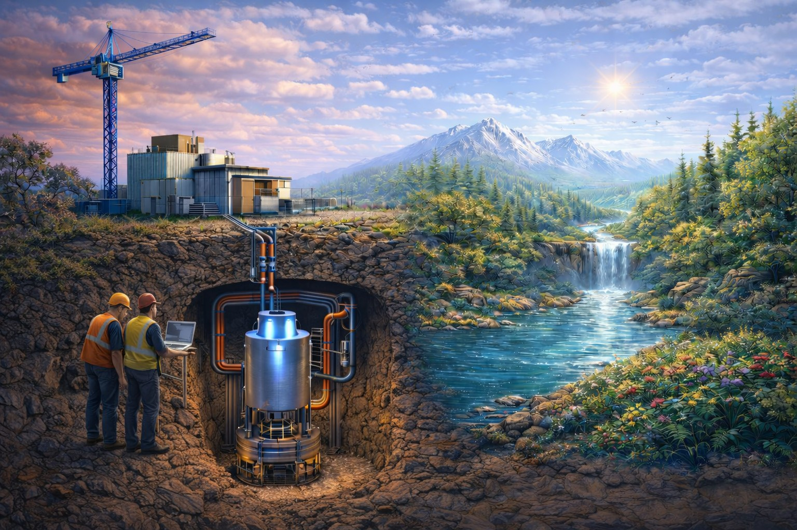

Progrès et compréhension de l’énergie nucléaire

L'énergie nucléaire est l'une des sources d'énergie les plus puissantes et les plus fiables, capable de produire d'importantes quantités d'électricité avec de très faibles émissions de carbone.
Parmi toutes les sources d'énergie disponibles — combustibles fossiles, hydroélectricité et énergies renouvelables — elle se distingue à la fois sur le plan technologique et en termes d'acceptation par le public.
Ce site, créé par un passionné indépendant, vise à explorer et à clarifier les progrès réalisés dans ces deux domaines.